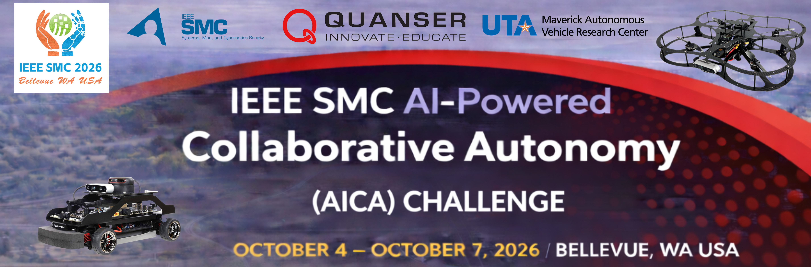

Virtual Stage Competition Guide
Welcome to the Virtual Stage of the IEEE SMC AICA Challenge.
This guide explains what teams should prepare for virtual-stage evaluation.
Navigation
- Virtual Stage Submission
- Virtual Stage Detailed Scenario
- Core Principles for Multimodal Delivery
- Operational Guide
- Scoring and Ranking
- Resources
1) Virtual Stage Submission
The objective of the Virtual Stage is to create a video that demonstrates each team’s ability to implement algorithms for the multimodal autonomous delivery system in the QLabs simulation environment.
For the full submission details, see the Virtual Stage Submission Guide.
2) Virtual Stage Detailed Scenario
For the complete scenario description, see the Virtual Stage Detailed Scenario
This document includes:
- Central pickup operations
- QCar2 can carry 2 small packages or 1 large package
- QDrone2 can carry 1 small package only
- Vehicle-to-vehicle transfer
- Window delivery and Shared drop-off delivery options
- Delivery completion requirements
- Pickup and delivery location references
- QCar2 node references and QDrone2 coordinate references
3) Core Principles for Multimodal Delivery
Delivery Planning and Decision-Making
- Plan delivery tasks by assigning them to either QCar2, QDrone2, or their coordinated operation through vehicle-to-vehicle transfer.
- Develop delivery planning strategies to achieve a high score by considering the city map, vehicle capabilities, pickup and drop-off locations, and available delivery options.
Multi-Agent Coordination
- Coordinate QCar2 and QDrone2 actions for pickup, transfer, and delivery
- Manage timing and interaction between vehicles for efficient mission execution
Control Systems and Navigation
- Design and implement a control algorithm to generate steering and velocity commands for the autonomous navigation of QCar2 within road boundaries while avoiding collisions.
- Develop smooth and safe trajectories for QDrone2, ensuring stable, high-performance flight while avoiding obstacles.
Mission Completion and Efficiency
- ~~Ensure atleast one delivery is completed successfully ~~
- Optimize overall mission time and execution efficiency
4) Operational Guide
See the Operational Guide for the step-by-step mission workflow and the operational constraints for valid pickup, transfer, delivery, and mission execution for both QCar2 and QDrone2 in the virtual stage.
5) Scoring and Ranking
This section defines how team performance is scored and how rankings are determined in the Virtual Stage.
Scoring Method
- Mission time begins at the mission start time.
- When a delivery is successfully completed, a delivery score is calculated using the scoring formula.
- The total score is displayed at the top of the QLabs window.
Scoring formula:
- Score for each completed delivery = 1000 − delivery completion time + window delivery bonus
- Total Score = Sum of all delivery scores
Delivery Completion Time is the time taken to complete a delivery, measured from the mission start time until the package is successfully delivered.
Window Delivery Bonus: Only QDrone2 can perform window deliveries, and the bonus depends on the target floor level.
Bonus by floor level:
- Floor 4 → +400
- Floor 3 → +300
- Floor 2 → +200
Higher scores are earned by completing deliveries earlier and by choosing delivery methods that provide additional bonus points.
Ranking
- Teams are ranked based on their total score
- The team with the highest total score ranks first